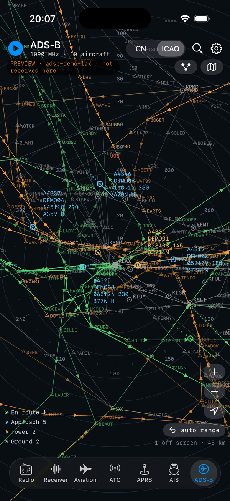

Turn an RTL-SDR into
a receiver in your pocket
SDRViewer is a software-defined radio receiver for iPhone and iPad. The RTL-SDR plugs into a computer or a Raspberry Pi, the phone connects to it over Wi-Fi, and all the demodulating and decoding happens on the phone.
Start here I already run rtl_tcp
How it fits together
Three steps
- Get the hardwareAn RTL-SDR, an antenna, and a computer or Raspberry Pi with a USB port, or a BL618 board. What you need →
- Run rtl_tcp on the computerIt sends the receiver's samples out over the network. Pick your system:
- Give the app the addressPhone and computer on the same Wi-Fi, the computer's address in the app, press play. Connect in the app →
What it receives
📻
RadioFM broadcast, with a band scan and stereo
🎚️
ReceiverSpectrum and waterfall, FM / AM / SSB, D-STAR digital voice
✈️
AviationACARS data-link messages
🗼
ATCTower, approach and ATIS voice
📍
APRSAmateur radio positions and messages
🚢
AISShips on a map
🛩️
ADS-BAircraft, on a map or a radar scope
In public beta. The app is distributed through TestFlight: install Apple's TestFlight on the iPhone, then open testflight.apple.com/join/AQxQcY5q.